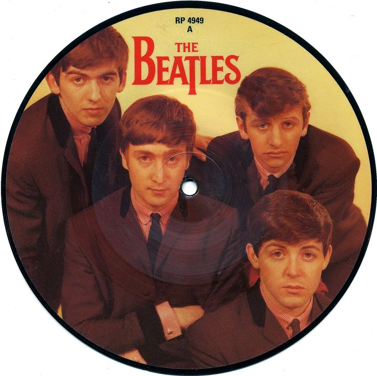
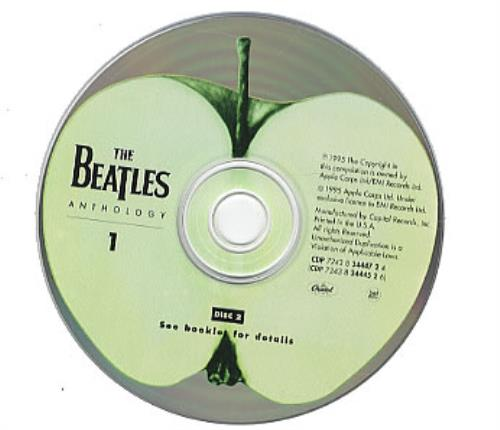

Дискография

1963
- Please Please Me
- With The Beatles

1964
- A Hard Day's Night
- Beatles for Sale
1965
1966
1967
- Sgt. Pepper's Lonely Hearts Club Band
- Magical Mystery Tour
1968
- The Beatles (The White Album)
1969
- Yellow Submarine
- Abbey Road
1970
Вернуться к началу